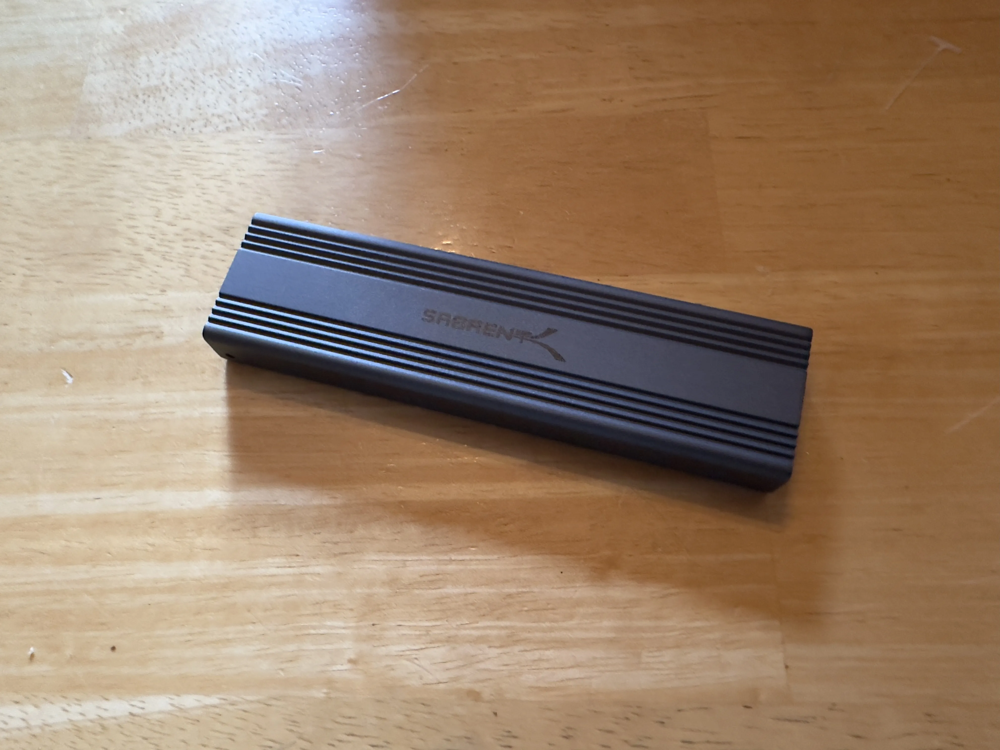
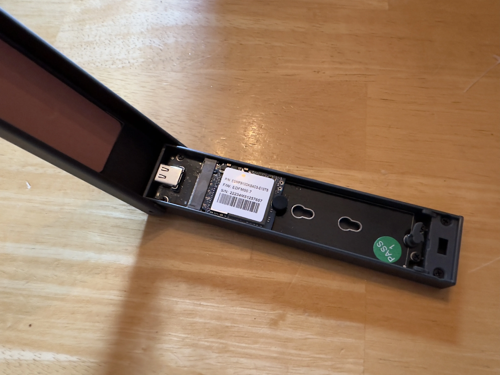

Making a Fast As Hell Flash Drive
A while back, I upgraded the storage in my Steam Deck. Going from 512GB, to 2TB. The upgrade was so worth it. But, as a result, I had a 512GB SSD just sitting around.
After a while, I ended up ordering an NVME SSD enclosure.

After chucking the SSD in there, and formatting it. I now have a little, fast as hell, USB drive. That I can also use if I need to image other NVME drives.

Reply to this post via email 📫
For Webmail Users
Address: reply.65tu8@nthp.me
Subject: RE: Making a Fast As Hell Flash Drive